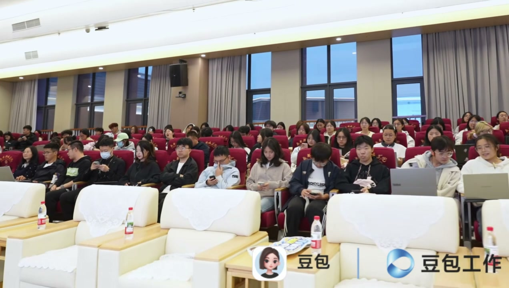
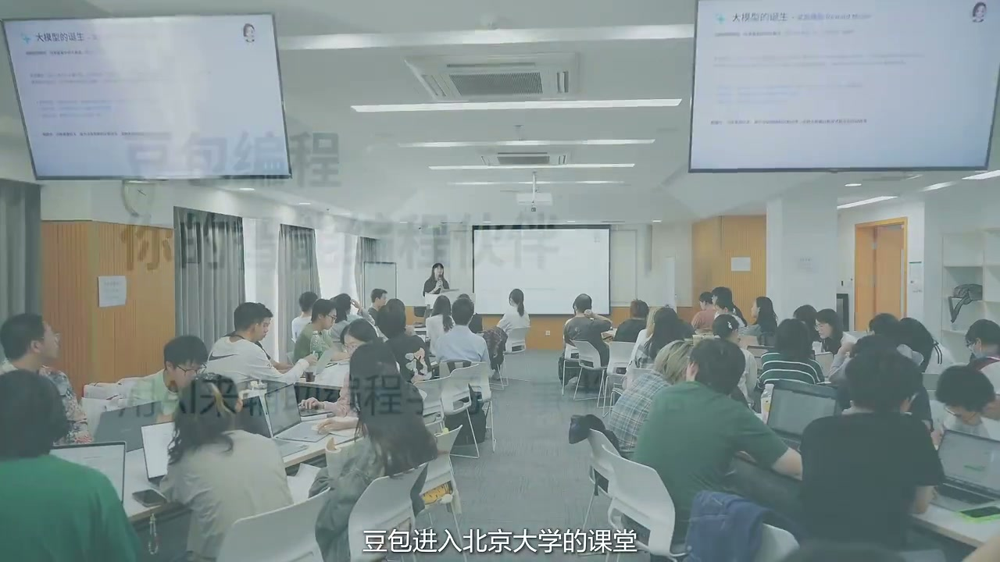
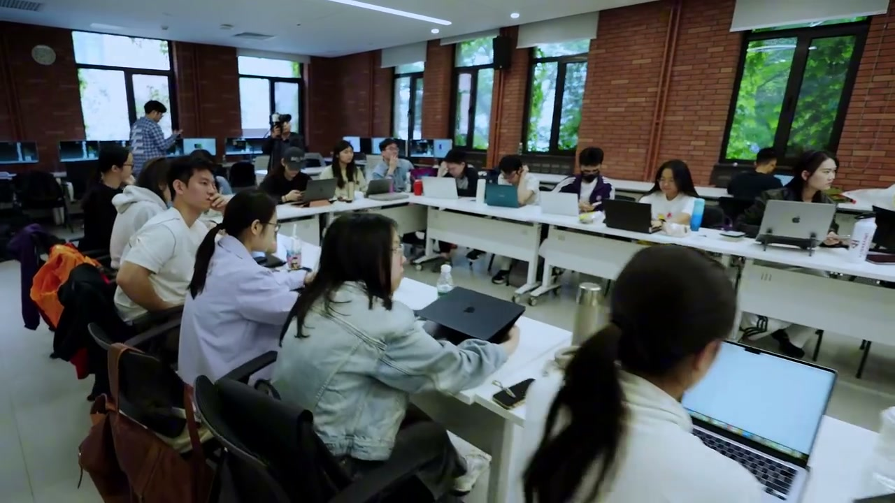
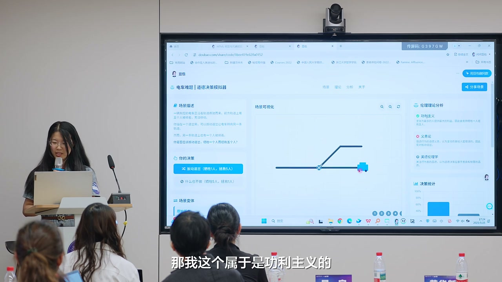
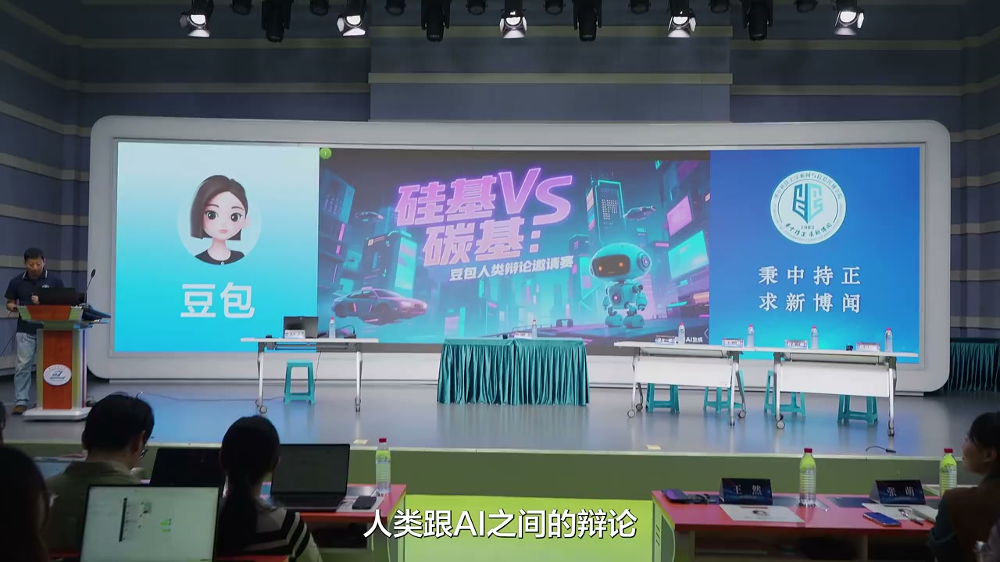

一堂现场动手、带走成果的 AI 实战公开课—— 团学工作 / 学习 / 考研 / 留学 / 就业 / 社团 / 竞赛全能提效，参与实操即可领豆包标准版会员礼包。
以下三步完成操作，即可领取豆包会员额度：
四大模块层层递进，从认识 AI 到亲手用它完成你的学习任务
从 AI 聊天问答到 AI 自主执行任务，了解新一代 AI 的能力与应用边界。
现场体验 PPT 制作、Excel 数据处理、文档分析、深度研究与图片创作等真实场景。
学会使用 AI 工作任务及 Skill，把重复性工作转化为可复用的智能流程。
结合真实学习或工作任务，亲手操作 AI 工具，体验从提出需求到成果交付的完整过程。
已走进清华、北大、浙大、华科等全国高校





「AI 青年赋能计划 · 豆包工作校园行」面向高校学生普及前沿 AI 技术， 帮你建立对 AI 工具的认知与应用能力，提升面向未来的学习与就业竞争力。
积极响应国家人工智能发展战略的公益项目，不收取任何费用。
讲解、案例演示与现场实操结合，普及前沿 AI 技术与深度应用。
在校内报告厅现场进行，跟着讲师亲手完成自己的 AI 作品。
字节跳动豆包团队官方讲师现场授课，课程资料免费提供。